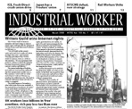

Submitted on Mon, 03/03/2008 - 1:30pm
Disclaimer - The opinions of the author do not necessarily match those of the IWW. This article is reposted in accordance to Fair Use guidelines.
 By John Grant Emeigh - Montana Standard, March 2, 2008
By John Grant Emeigh - Montana Standard, March 2, 2008
BUTTE - With an old, worn broom, Dennis Georg swept off nearly a foot
of February snow that had accumulated on the grave of Frank Little.
It was just a small favor from one Wobbly to another Wobbly: Solidarity to the end.
Georg,
as was Little, is a card-carrying member of a small but controversial
union known as the Industrial Workers of the World (IWW). It was
started in Chicago by a group of socialists and anarchists who wanted
to unite all the workers of the world. They were reviled by many as
subversives and Communists.
"It was once very dangerous to carry an IWW card," Georg said recently while in Butte.
WHO IS THIS MAN?
His name is Mansour Osanloo, leader of the Tehran Bus Workers' Union
and the focus of an international campaign that aims to get him
released from jail.
WHY IS HE IMPRISONED?
In October 2007 Osanloo was sentenced to five years in prison on
trumped up charges of endangering Iran’s national security and
criticising the regime. However, the real reason that he has been
targeted is as a member of a free trade union not controlled by the
government.
HOW LONG HAS HE BEEN IN JAIL?
Since the union was formed in June 2005, he has been arrested three
times and spent more time in the notorious Evin Prison than out.
Submitted on Fri, 02/29/2008 - 11:04pm
Disclaimer - The opinions of the author do not necessarily match those of the IWW. The image pictured to the right appeared in the original article. This article is reposted in accordance to Fair Use guidelines.
Andrew Clark in New York - guardian.co.uk, Friday February 29 2008
 It was tough - but Americans soldiered on. For three hours on
Tuesday afternoon, Starbucks outlets across the nation closed their
doors for a mass barista training session aimed at perking up coffee
quality. But was this shutdown an espresso masterclass or simply a
public relations masterstroke?
It was tough - but Americans soldiered on. For three hours on
Tuesday afternoon, Starbucks outlets across the nation closed their
doors for a mass barista training session aimed at perking up coffee
quality. But was this shutdown an espresso masterclass or simply a
public relations masterstroke?
Nicknamed "fourbucks" for the
hefty price of its brew, Starbucks holds a special place in modern
culture. It has injected new words into popular discourse –
Frappuccino, half-caff. Apparently a "red-eye" means an extra shot. And
to many people, the Italian word "venti" has become an adjective
meaning extra large.
Submitted on Thu, 02/28/2008 - 4:46am
Headlines:
- UK blood service cuts blunted
- AFSCME defeat births new convictions, strategy
- Rail Workers build inter-union solidarity caucus
Featured Articles:
- Online blacklist: how the Internet helps the bosses
- Working Out: Queer and labor's passionate affair
- The final March to the Left column by Dorice McDaniels
Download a free PDF copy of this issue.
Submitted on Wed, 02/27/2008 - 4:05pm
 For Immediate Release:
For Immediate Release:
IWW Starbucks Workers Union
February 26, 2008
Starbucks Baristas Question Substance of National Shutdown for "Training"
New York, NY- As Starbucks stores around the United States reopen after a three hour shutdown to train employees, baristas of the IWW Starbucks Workers Union are calling into question the efficacy of the event. Union baristas left the "training" feeling like it was a public relations event directed at consumers rather than a bona fide attempt to improve drink quality or customer service.
“The whole thing seemed a little silly to me,” said Starbucks barista Peter Montalbano on his way out of the training. “We supposedly learned how to build a latte ‘from the espresso up,’- but we’re still pulling shots from a push-button espresso machine and pouring them into paper cups for not much above the minimum wage. It’s difficult to imagine people really caring about crafting the ‘perfect cappuccino’ if they can’t even afford to pay their bills."